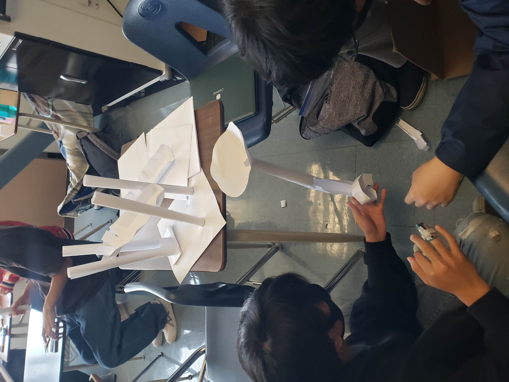

This week we finalized our cardboard boat. We used up a full roll of duct table to wrap
and layer the edges of the boat. We also layered the bottom of the boat to make it
water-sealed. Jayden slept in the boat.
*5/8/2023 - 5/12/2023*

This week we created a paper roller coaster. We looked up examples online and
came up with using segmented paper cut-outs to create a curved track for the marble.
We successfully created a ramp and a funnel. However, when we tried to create a loop,
it did not work, probably because the paper wasn't flexible enough to make a good loop
for the marble to go through. We also probably didn't have a good enough angle to
get the marble to have enough momentum to successfully clear the loop.
*5/19/2023 - 5/23/2023*
This week we worked on the analysis for our cardboard boat. We wrote down the
project description, project research, design constraints, design of project,
changes & modifications, final product, and even team member biographies.
*5/29/2023 - 6/2/2023*
>
This week we tested our cardboard boats. Our boat did not work at all. It sank before the second person
could get in. The boat came apart because the tape began to unpeel. We think that this happened
because we finished our boat too early and there was more time for the tape to degrade.